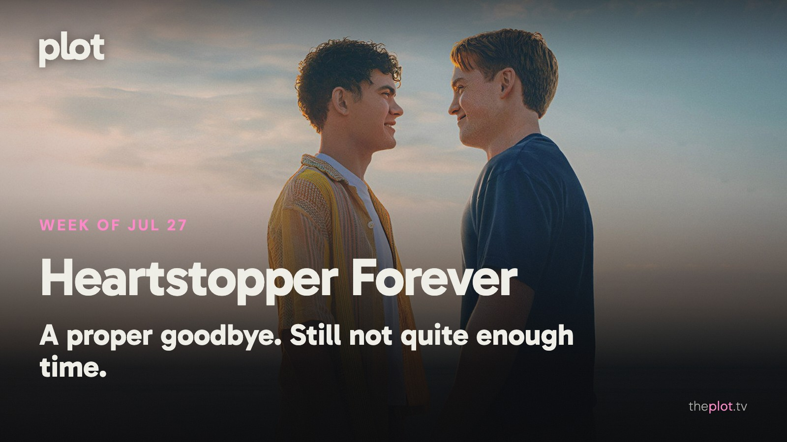

|
the week of July 27
|
|
Saying goodbye to Heartstopper has reminded everyone how much a supporting character can mean to you. The Dink finds a different sort of wounded pride on the pickleball court, while Motor City keeps the arguments mostly physical. This week, Spider-Man and Batman return in very different moods, and Mario finally heads for the living-room screen.
 Image: Heartstopper Forever (2026), promotional backdrop. Source: TMDB. Text overlay by Plot.
In theaters
 Image: Motor City (2026), promotional backdrop. Source: TMDB.
Alan Ritchson's Motor City turns a wrongful conviction into a revenge mission in 1970s Detroit. The film's emphasis on bodies, music, and momentum makes it a change of pace from a summer of dialogue explaining entire universes.
The Odyssey is Christopher Nolan's journey home from the Trojan War. The attractions are on a scale your television cannot reproduce. If a summer evening deserves a film that takes over the whole evening, this is the obvious candidate.
The live-action Moana is still offering an ocean voyage with familiar songs. Catherine Laga'aia leads, with Dwayne Johnson as Maui. A straightforward family choice when agreement matters more than discovering something unfamiliar.
What everyone's talking about
Heartstopper Forever has given fans an ending and a new reason to wish for more time. The film still values emotional openness, and Autostraddle celebrates that while missing the space the series gave its wider friendship group. A fan review and its replies show affection surviving complaints about the compressed format. That is a more interesting response than simple disappointment. A goodbye can work for the central couple and still feel too hurried for the people you came to love beside them.
 Image: The Dink (2026), promotional backdrop. Source: TMDB.
The Dink makes pickleball a threat to a man's identity, which is a perfectly reasonable foundation for a ridiculous sports comedy. The Saturday Evening Post finds its sharpest joke in tennis players' contempt for the newcomers; TheWrap finds that the premise wears thin. Your patience for watching someone get over himself may decide how long the joke lasts. Knowing the rules of pickleball is much less essential. The sore point is status, and that travels well beyond a court.
Production note. This line is not in the sent letter.
GIF: Taking a supposedly casual game much too seriously. Savannah to choose the GIF. Now on TV and Streaming
 Image: 72 Hours (2026), promotional backdrop. Source: TMDB.
The Netflix comedy film 72 Hours puts Kevin Hart's middle-aged executive in the wrong bachelor-party chat. He goes along to rescue his career. For the part of you that would like to watch someone else send the ill-advised message.
 Image: Avatar Aang: The Last Airbender (2026), promotional backdrop. Source: TMDB.
Avatar Aang: The Last Airbender is now on Paramount+. This animated film revisits Aang and his friends as adults. A way back into the world for longtime fans, with the pleasure of seeing familiar people at a different point in their lives.
Coming up
|
|
You're receiving this because you subscribed at theplot.tv.
Unsubscribe
SUSUMU HOUSE · Level 1, 63-73 Ann Street, Surry Hills, NSW 2010 |
 Play the official trailer
Play the official trailer Play the official trailer
Play the official trailer Play the official trailer
Play the official trailer